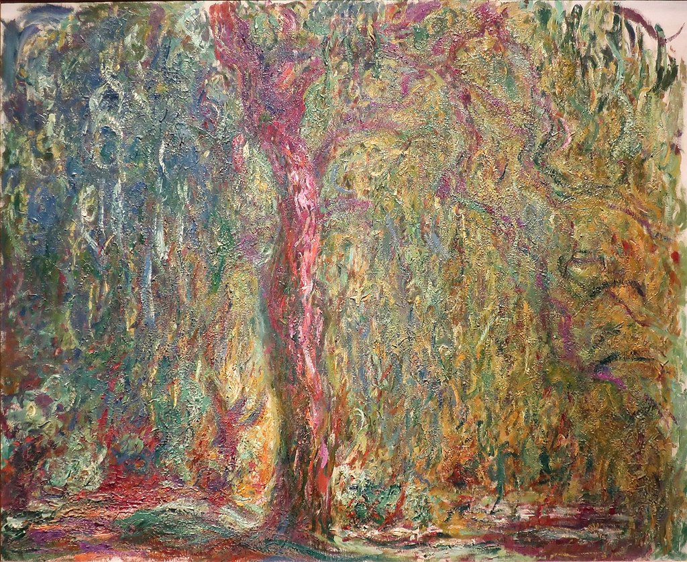

<head>
<meta charset="UTF-8" />
<meta name="keywords" content="drawing, painting" />
<meta name="description" content="drawings by Sunjy" />
<title>Sunjy</title>
<link rel="shortcut icon" type="image/x-icon" href="../../mImages/mCommon/favicon.ico" media="screen" />
<link rel="stylesheet" type="text/css" href="../../mCsses/mCommon/mCssA.css" />
<link rel="stylesheet" type="text/css" href="../../mCsses/mCommon/mCssB.css" />
<link rel="stylesheet" type="text/css" href="../../mCsses/mCommon/mCssC.css" />
<link rel="stylesheet" type="text/css" href="../../mCsses/mCommon/mCssD.css" />
<link rel="stylesheet" type="text/css" href="../../mCsses/mContent/mCssA.css" />
<link rel="stylesheet" type="text/css" href="../../mCsses/mContent/mCssB.css" />
<link rel="stylesheet" type="text/css" href="../../mCsses/mContent/mCssC.css" />
<link rel="stylesheet" type="text/css" href="../../mCsses/mContent/mCssD.css" />
</head>
<script type="text/javascript" src="../../mScripts/mContent/mContentAA.js" /></script>
<script type="text/javascript" src="../../mScripts/mContent/mContentAB.js" /></script>
<script type="text/javascript" src="../../mScripts/mContent/mContentAC.js" /></script>
<script type="text/javascript" src="../../mScripts/mContent/mContentAD.js" /></script>
<script type="text/javascript"></script> 
<script type="text/javascript">
document.write('<div class="mImgAbsolute"></div>');
/*
document.write('<p class="mFontSizeBColor" />From a white paper...</p>');
document.write('<table class="center"><tr><td>');
document.write('');
document.write('</td></tr></table>');
*/
</script>


<script type="text/javascript">
document.write('<p class="mFontSizeBColor" />Weeping Willow </p>');
document.write('<p class="mFontSizeSColor" />Weeping Willow, by Claude Monet, depicts a Weeping Willow tree growing at the edge of his water garden pond in Giverny, France. This painting is one of a series of Monet paintings of this Weeping Willow.<br><br>Shadowy and writhing forms characterize the Weeping Willow paintings, express his grieving mood.<br><br>Monet had painted ten Weeping Willow paintings by 1919. These paintings were his mournful response to the tragedy of World War I.<br><br>During the war, Monet’s gardens at Giverny were emptied of the people he knew as his family and household staff, was called into service or moved away from the advancing German army.<br><br>Monet could hear artillery fire during the war, but he refused to leave, preferring to share the fate of his gardens. Shadowy and writhing forms characterize the Weeping Willow paintings, express his grieving mood.<br></p>');
document.write('<table class="center" /><tr><td>');
document.write('<br>Shadowy and writhing forms characterize the Weeping Willow paintings, express his grieving mood.<br><br>Monet had painted ten Weeping Willow paintings by 1919. These paintings were his mournful response to the tragedy of World War I.<br><br>During the war, Monet’s gardens at Giverny were emptied of the people he knew as his family and household staff, was called into service or moved away from the advancing German army.<br><br>Monet could hear artillery fire during the war, but he refused to leave, preferring to share the fate of his gardens. Shadowy and writhing forms characterize the Weeping Willow paintings, express his grieving mood.<br>" />');
document.write('</td></tr></table>');
</script>


